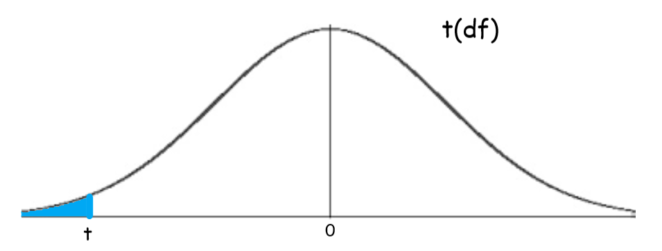

back to all liu packets
back to home
hw packet 13
significance test for \(\mu\)
same shit as always, but quick rundown here:
- name: 1-sample t-test for \(\mu\)
- conditions: RNG, 10%, & normality check
- test stat: \(t=\frac{\bar{x}-\mu}{\frac{s_x}{\sqrt{n}}}\)
- to get the area/p-val, use \(\text{tcdf}\)
pic:

significance test for a difference in means
same. fucking. SHIT.
\(\mu_1-\mu_2\)= true diff in means
\[t=\frac{(\bar{x_1}-\bar{x_2})-(\mu_1-\mu_2)}{\sqrt{\frac{s_1^2}{n_1}+\frac{s_2^2}{n_2}}}\]
two ways to get df- you either use the calculator's one,
or you just take the smaller of the two sample sizes & subtract 1, that also works